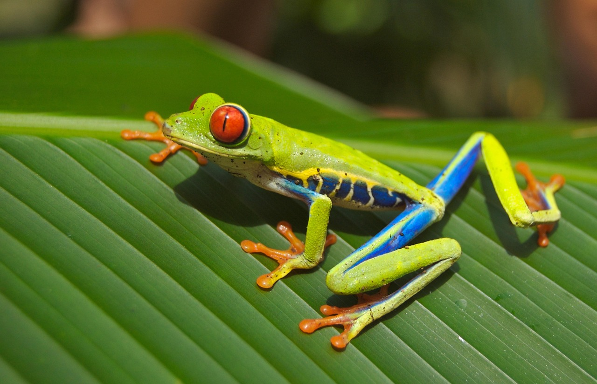
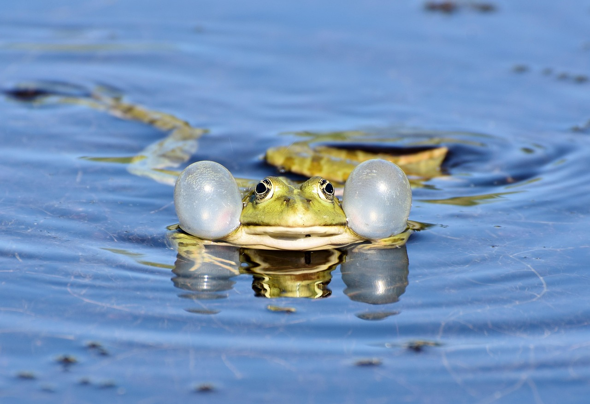
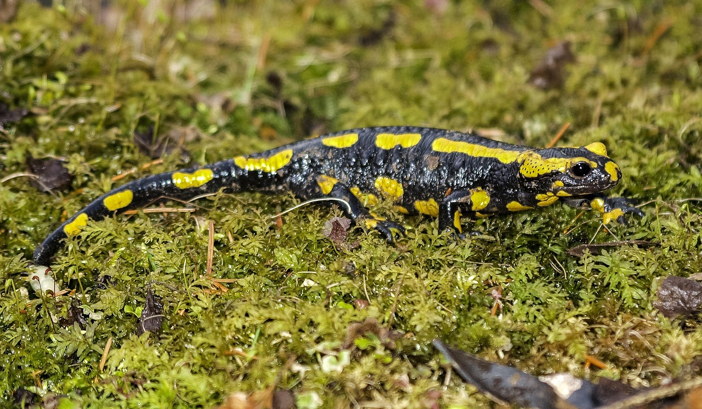
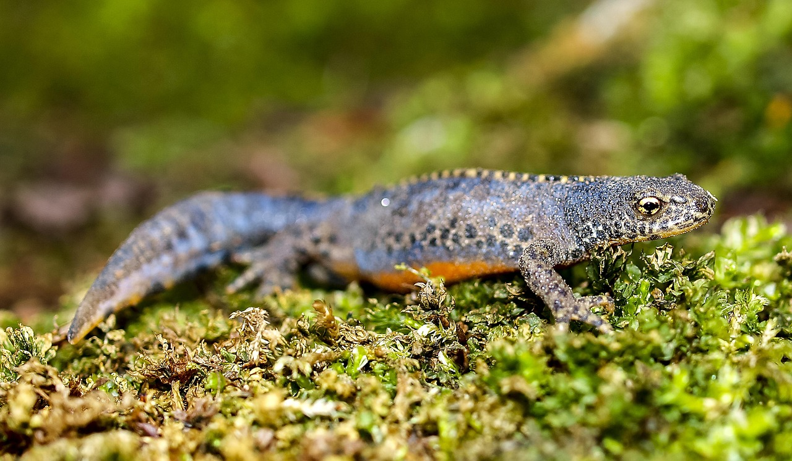
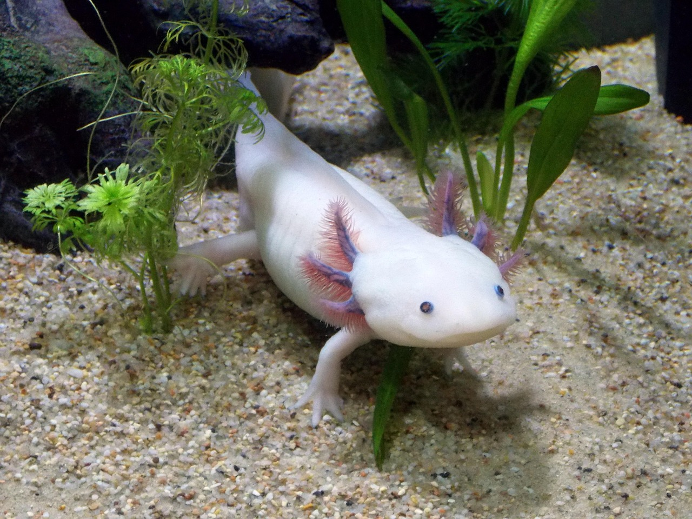

La rana es un anfibio conocido por su capacidad de saltar largas distancias y vivir tanto en el agua como en la tierra. Tiene piel húmeda y suave que le ayuda a respirar parcialmente a través de ella.
🌍 Hábitat Las ranas habitan en lagos, ríos, charcos, selvas y zonas húmedas de casi todo el mundo. Necesitan ambientes con agua para reproducirse.
🐾 Estilo de vida Las ranas son animales carnívoros que se alimentan de insectos y pequeños invertebrados. Son más activas durante la noche y utilizan su lengua larga y pegajosa para atrapar presas.

El sapo es un anfibio parecido a la rana, pero con piel más seca y rugosa. Es conocido por su resistencia y su capacidad para adaptarse a distintos ambientes.
🌍 Hábitat Los sapos viven en jardines, bosques y zonas húmedas, aunque pueden alejarse más del agua que las ranas.
🐾 Estilo de vida Son animales nocturnos que se alimentan de insectos, lombrices y pequeños invertebrados. Pasan el día escondidos para conservar la humedad de su piel.

La salamandra es un anfibio de cuerpo alargado y cola larga que se parece a un pequeño lagarto. Es conocida por su capacidad de regenerar partes de su cuerpo.
🌍 Hábitat Habita en bosques húmedos, cerca de ríos y debajo de piedras o troncos donde hay humedad constante.
🐾 Estilo de vida Las salamandras son carnívoras y se alimentan de insectos y pequeños invertebrados. Prefieren ambientes oscuros y húmedos.

El tritón es un pequeño anfibio parecido a la salamandra que pasa gran parte de su vida en el agua. Es conocido por su cuerpo alargado, su cola larga y su capacidad para regenerar algunas partes de su cuerpo.
🌍 Hábitat El tritón habita en estanques, lagunas, ríos pequeños y zonas húmedas con agua dulce. Prefiere lugares con mucha vegetación donde pueda esconderse.
🐾 Estilo de vida Se alimenta de insectos acuáticos, larvas y pequeños organismos. Puede vivir tanto en el agua como en la tierra dependiendo de la etapa de su vida.

El ajolote es un anfibio mexicano famoso por conservar características juveniles durante toda su vida. Es conocido por su apariencia única y su gran capacidad de regeneración.
🌍 Hábitat Habita en lagos y canales de agua dulce, especialmente en Xochimilco, México.
🐾 Estilo de vida El ajolote vive completamente en el agua y se alimenta de pequeños peces, insectos y larvas. Respira mediante branquias externas visibles a los lados de su cabeza.
